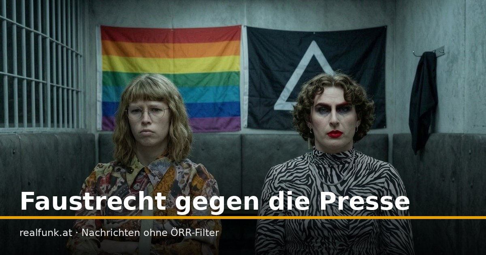

Faustrecht gegen die Presse

Reporter werden zusammengeschlagen, die Täter feiern sich, und ein Bündnis droht offen zwei demokratischen Parteien. Käme das von rechts, hieße es Terror. Von links heißt es Protest.
Rund um den AfD-Bundesparteitag in Erfurt wurden Journalisten angegriffen. Zwei Medienvertreter wurden durch Flaschenwürfe verletzt, einer musste vom Rettungsdienst versorgt werden; ein Reporterteam eines rechtskonservativen Mediums wurde laut Berichten von etwa einem Dutzend Vermummten gejagt und geschlagen. Die Polizei ermittelt und kündigte an, Angriffe auf Journalisten „konsequent“ zu verfolgen.
Das Bündnis „Widersetzen“ rechtfertigte die Angriffe, sofern die Betroffenen für rechtskonservative oder AfD-nahe Medien arbeiteten. Auf einer Pressekonferenz drohte ein Sprecher zudem offen CDU und BSW: Wer es wage, „den Faschisten an die Macht zu helfen“, mache sich zum „nächsten Aktionsziel“. Ein Bündnis, das Gewalt gegen die Presse gutheißt und gewählten Parteien mit sich selbst als „Aktionsziel“ droht.
Man muss die AfD nicht mögen, um die Regel zu erkennen: Wer Andersdenkende zusammenschlägt und die Presse nach Gesinnung sortiert, ist kein Widerstand, sondern ein Angriff auf die Grundlage, auf die er sich beruft. Käme dieselbe Szene von rechts, ein Mob, der Reporter jagt und Parteien mit Gewalt droht, spräche der öffentlich-rechtliche Betrieb von Terror und von einer Bedrohung der Demokratie. Hier läuft es unter „Protest“ und „Aktionsbündnis“.
Das Bündnis nennt sich antifaschistisch. Doch wer die Meinungsfreiheit an der Faust misst und festlegt, welche Journalisten Schutz verdienen und welche nicht, übernimmt genau die Methoden, die er zu bekämpfen vorgibt. Der ÖRR meldet die Zahl der Demonstranten zuverlässig, die Zahl der verletzten Reporter seltener, und den Satz mit dem „Aktionsziel“ fast nie.